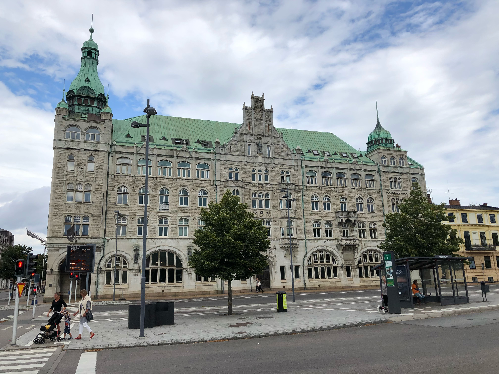
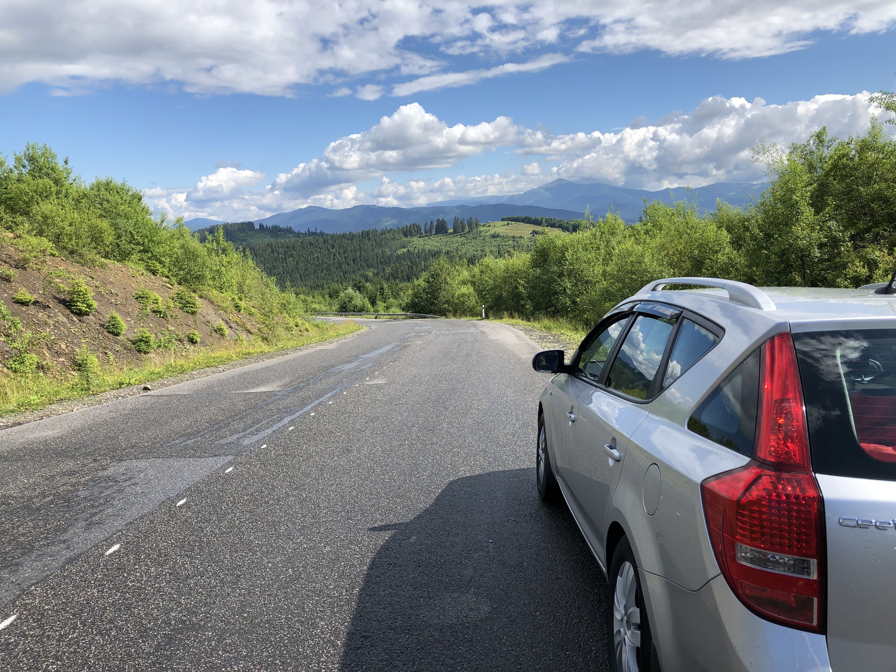

Cooking


Listening to music
- Traveling helps me to explore different cultures, meet new people and visit a lot of beautiful places. My family are the only people who I travel with. I’ve been to Bulgaria two times and Sweden six times.
- Cooking is not something that has always been my hobby. Earlier I used to cook rarely and only simple meals. However, while becoming older I improved my cooking skills and got more interested in making food. The more I cooked, the more I liked it. Ultimately, it became my hobby.
- Music cheers me up and makes me wanting to dance. Therefore, I listen to it frequently every day.
- If you want to contact me click here